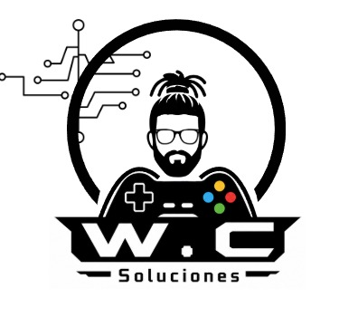

🎮 Combate basado en habilidad
La experiencia busca priorizar posicionamiento, movimiento y ejecución del jugador.

Un videojuego competitivo para Android que combina Battle Royale, extracción, exploración y combate basado en habilidad dentro de escenarios low-poly optimizados para dispositivos móviles.
No estoy intentando reconstruir simplemente un juego anterior: estoy utilizando lo aprendido durante ese análisis para diseñar una arquitectura nueva desde cero.
El proyecto comenzó estudiando técnicamente un APK del videojuego NFT Overlord.
Durante ese proceso se exploraron sus recursos gráficos, modelos 3D y estructura general con el objetivo de comprender cómo estaba construido el producto.
Los assets extraídos fueron inicialmente organizados y procesados utilizando Unity y herramientas de edición 3D.
Sin embargo, el análisis reveló un problema importante: parte de la arquitectura dependía de componentes de red cerrados, incluyendo Photon, mientras el proyecto no disponía del código fuente necesario para controlar realmente su funcionamiento.
Continuar intentando reconstruir una arquitectura ajena se convirtió en una limitación.
La decisión fue abandonar la dependencia de esa arquitectura y reconstruir el proyecto sobre una base completamente controlable.
Extraction BR Mobile está siendo reconstruido desde cero utilizando Godot Engine 4.
El objetivo es crear un videojuego de extracción competitivo diseñado específicamente para dispositivos Android.
La experiencia busca priorizar posicionamiento, movimiento y ejecución del jugador.
La interfaz y los controles están diseñados desde el inicio pensando en pantallas táctiles.
El estilo gráfico facilita mantener identidad visual mientras se reducen costos de renderizado.
La cámara permite visualizar claramente el entorno, enemigos y zonas de combate.
El prototipo actual ya permite probar movimiento mediante controles táctiles utilizando un joystick virtual.

Espacio reservado para mostrar el gameplay real del prototipo ejecutándose en Android.
Motor principal del videojuego. Su naturaleza Open Source permite tener mayor control sobre la arquitectura y el proceso de desarrollo.
Lenguaje utilizado para implementar movimiento, interacción, sistemas de gameplay y lógica general.
Utilizado para limpiar, revisar y optimizar modelos 3D antes de introducirlos al pipeline de Godot.
El proyecto está diseñado pensando en distribución y pruebas directamente sobre dispositivos Android.
Uno de los mayores aprendizajes del proyecto ha sido construir un flujo adecuado para reutilizar, limpiar y optimizar modelos 3D.
Asset 3D
↓
Blender
↓
Limpieza de geometría
↓
Optimización
↓
Exportación
↓
Godot 4
↓
Materiales / Colisiones / Gameplay
Estado: prototipo técnico en desarrollo activo.
Este proyecto funciona también como devlog: no quiero mostrar únicamente el producto terminado.
Quiero documentar decisiones técnicas, errores, prototipos descartados, experimentos y avances.
El desarrollo mismo forma parte del proyecto.
El apoyo a través de Patreon o Ko-fi ayudará a cubrir el tiempo de desarrollo, infraestructura futura, herramientas y pruebas del proyecto.
Los patrocinadores podrán recibir acceso anticipado a determinadas builds de prueba y aparecer en los créditos del proyecto final según el nivel de apoyo establecido.